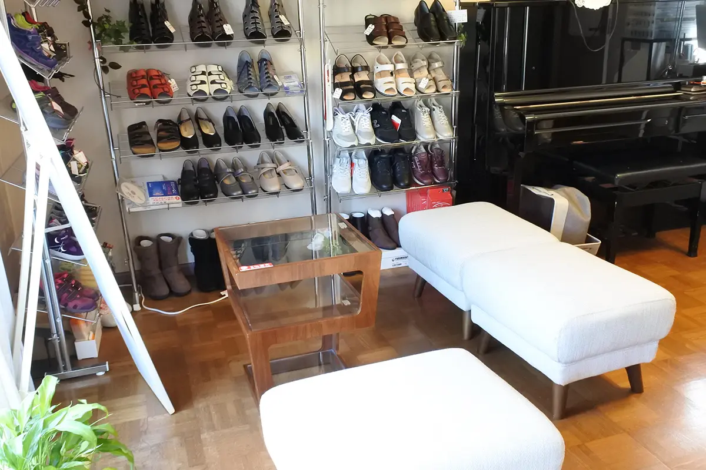
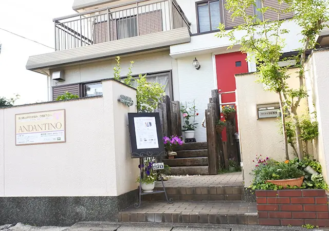

靴の販売・フィッティング
子ども靴、婦人靴、ウォーキングシューズなどを足と用途に合わせて提案します。
ANDANTINOは、2007年に和歌山市で開業した子ども靴・婦人靴・インソールの専門店です。お困りのことを伺い、足・今の靴・歩き方を確認してから、その方の用途に合う方法をご提案します。
住宅地にある予約制の店舗です。お一人おひとりの相談時間を確保し、計測から試着、歩行確認まで落ち着いて進めています。

子ども靴、婦人靴、ウォーキングシューズなどを足と用途に合わせて提案します。
足サイズ、フットプリント、今の靴、立ち方・歩き方を確認し、選び方と履き方をお伝えします。
使用する靴と目的を確認し、インソールの作製・微調整や可能な範囲の靴調整を行います。
園、学校、助産院、企業・施設などの依頼に合わせて出張セミナーを行います。
ANDANTINOは医療機関ではなく、病気の診断や治療を行いません。ご来店の手順と料金は、ご予約・ご相談ページと料金ページでご確認いただけます。

南海本線和歌山市駅からバスで約20分、JR阪和線和歌山駅からバスで約25分。「水軒口」バス停から徒歩約5分です。
店舗に普通車1台・軽乗用車1台分の駐車スペースがあり、近隣に契約駐車場もあります。詳しい位置はご予約時にご確認ください。
Googleマップで見る ↗ANDANTINOはFerse加盟店です。Ferseはヨーロッパのインポートシューズ正規販売やオリジナルシューズを扱い、子どもの足と健康に配慮した靴を取り扱っています。
子どもの足と靴について日独小児靴学研究会で学び、足育・靴選びセミナーも行っています。また、わかやま足育推進プロジェクトなど地域の足育活動にも参加し、店舗の枠を超えて「和歌山の足を元気にしたい」という思いで取り組んでいます。関連団体・専門家は外部リンク集をご覧ください。
ご来店は予約制です。普段履いている靴も一緒にお持ちください。